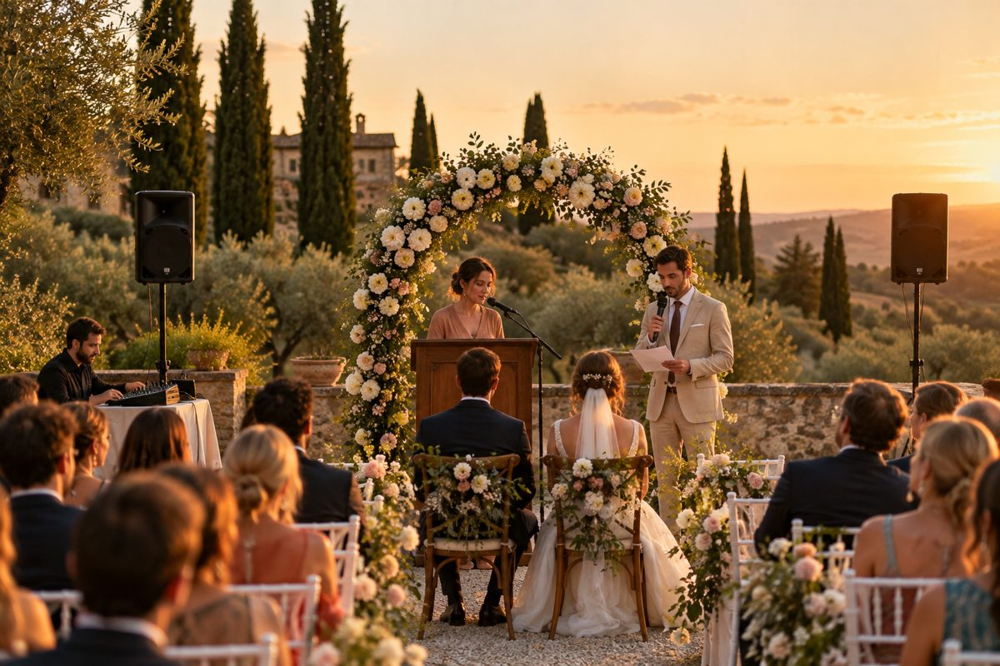
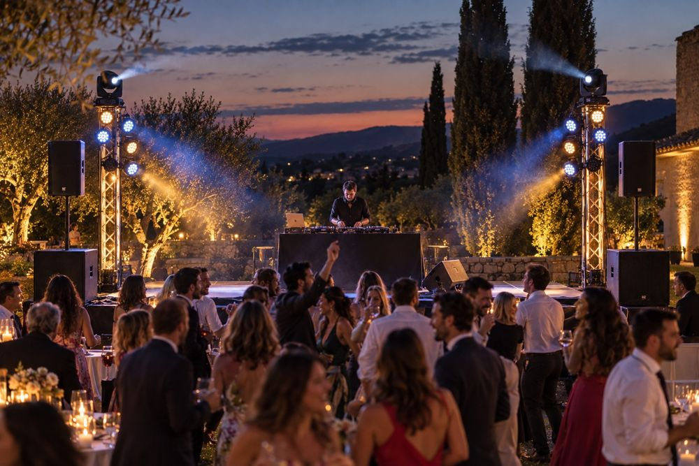
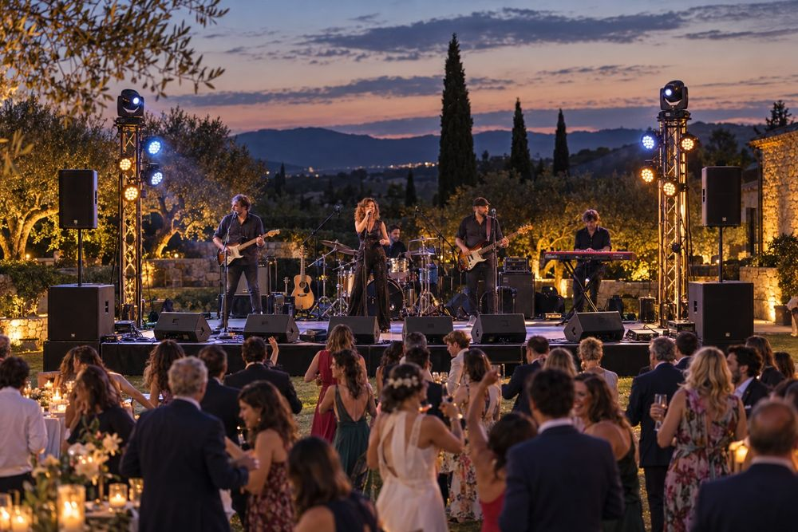

Decisión de inversión
La propuesta es vender una experiencia integral: sonorización técnica, DJ propio y banda propia, con posibilidad de cubrir ceremonia, cóctel y fiesta. El equipo se compra por utilidad transversal y se amplía cuando haya contratos recurrentes.
Lo que sí compraría primero
PA RCF, microfonía adaptable, cableado, electricidad, protección y kit de ceremonia. Mesa digital y microfonía de banda si vais a operar conciertos desde el primer día.
Prioridad: sonido fiableLo que alquilaría al principio
Escenario 6×4, tarima DJ, cubierta, monitores extra, refuerzo de PA, hazer, iluminación grande y vehículo si no tenéis uno adecuado.
Prioridad: liquidezPropuesta comercial

01 · Ceremonia
Voces, música de entrada/salida, lecturas y coordinación con el oficiante. Kit compacto y discreto.
Oferta autónoma o complemento. Imagen generada del kit propuesto: PA compacta en trípodes, micro de atril, inalámbrico de mano y mesa compacta.
02 · DJ + fiesta
El DJ es Guille, con su controladora. PA, sonido y luces propias según el paquete contratado.
Caché DJ: ~1.000 € por evento, cobrado al cliente y sin coste para la empresa: 100 % beneficio.
Sin compra de reproductor DJ.
03 · Banda en directo
Formación propia con técnico, mesa, microfonía y monitores. Escenario y producción ampliada bajo demanda.
El caché de músicos debe figurar como coste.Catálogo de servicios y paquetes
Ceremonia esencial
Incluye: 2 altavoces principales (sin subs), mesa compacta, 2 inalámbricos, música y técnico.
No incluye: música en directo salvo contratación.
Precio orientativo a probar: 350–650 € + impuestos aplicables.
Hipótesis comercial, no tarifa confirmada.Fiesta DJ
Incluye: DJ (Guille) con su equipo, 2 tops, 2 subs, montaje, operador y luces básicas si disponibles.
Extras: horas, luces avanzadas, tarima.
Precio orientativo a probar: 900–1.600 € de producción (sonido, luces, montaje) + caché DJ ~1.000 €, + impuestos aplicables.
Caché DJ: lo pincha Guille, así que no cuesta nada a la empresa: los ~1.000 € son 100 % beneficio.
Producción: hipótesis comercial basada en referencias generales.Banda propia
Incluye: músicos, PA, mezcla, micros, monitores, prueba y técnico.
Extras: escenario, cubierta, más luz, PA reforzada.
Precio orientativo a probar: 2.000–4.500 € + impuestos aplicables.
Depende del caché real de los músicos y duración.Paquetes combinados
Ceremonia + DJ. Cobrar por ambos momentos y coordinar el traslado de equipos.
Banda + DJ. PA común si actuaciones consecutivas, distinto control y monitorización.
Ceremonia + banda + DJ. Mayor ingreso potencial, pero más horas, personal y riesgo logístico.
Flujo operativo por boda
Espacios, aforo, horarios, restricciones, corriente, accesos y meteorología.
Canales, microfonía, necesidades de la banda, set DJ y alquileres.
Revisión de RF, electricidad, pruebas de línea, monitores y música de ceremonia.
Responsable técnico, incidencias, inventario y cierre económico.
Inventario y decisiones de compra
Todos los importes están en euros. Las decisiones se guardan en este navegador cuando es posible. Cambia el estado de cada elemento para calcular vuestra inversión. «Alquilar» no añade compra inicial, pero su alquiler por evento se suma al coste de cada servicio en el simulador financiero. Ajusta el alquiler por evento con presupuestos reales y el porcentaje de eventos que necesitan cada equipo. La columna «Se paga en» indica cuántos alquileres evitados pagan la compra.
| Equipo | Compra | Decisión | Alquiler €/evento · % eventos | Se paga en |
|---|
¿Qué material se reutiliza?
Esta matriz distingue la capacidad técnica de un equipo y el momento en que se necesita. El ✓ no garantiza que pueda cubrir dos espacios simultáneos.
| Equipo | Ceremonia | DJ | Banda | Estado actual |
|---|
Ejemplo: boda con ceremonia y DJ
Los tops pueden reutilizarse en ambos, pero si la ceremonia está en un jardín y la fiesta en un salón, desmontar y trasladar puede ser inviable. Solución: segunda PA pequeña para ceremonia, o alquiler puntual.
Ejemplo: banda seguida de DJ
La misma PA principal y luces pueden continuar. Se desconecta o silencia la mesa de banda y se conecta el DJ mediante una transición preparada. Se libera microfonía y monitores.
Simulador financiero
Introduce vuestra demanda y precios. Separamos ventas sin IVA, costes variables, gastos fijos y compra inicial. Los cachés de los músicos deben incluirse aunque sean conocidos o socios. El DJ es Guille: su caché se cobra en cada fiesta DJ y no tiene coste para la empresa, así que es 100 % beneficio. No es una previsión garantizada.
| Servicio | Eventos/año | Precio sin IVA € | Personal y otros €/ev. | Alquiler €/ev. | Margen €/ev. |
|---|
Sensibilidad: ¿y si vendéis menos?
Resultado tras socios y amortización según el volumen.Cómo interpretar el resultado
Personal, transporte y otros: caché de músicos (el DJ no, porque es Guille y no cuesta nada), técnico externo, combustible o coste por km del vehículo, peajes, personal de carga y consumibles. Alquiler de material: se calcula solo desde el inventario; los escenarios predefinidos ya restan ese alquiler de su coste variable para no contarlo dos veces. Coste de socios: cuotas de autónomo y la retribución que queráis asignar al trabajo de los socios; pedid la cifra a la gestoría. Coste fijo: seguro, gestoría, web, almacén, mantenimiento, software y marketing. Fuera del modelo: IRPF/Impuesto sobre Sociedades, intereses, IVA, compra de vehículo y estacionalidad mensual de la caja.
Hoja de ruta y prioridades
Antes de comprar
Confirmar integrantes de la banda, qué backline aportan, rider real, equipo DJ, calendario de actuaciones y 3 presupuestos reales de alquiler.
Hito: 3–5 oportunidades comerciales cualificadas y prueba de montaje.
Compra esencial
PA, kit ceremonia, cableado, microfonía y mesa para banda si está validada. Alquilar cuñas adicionales y escenarios.
Hito: 5–10 eventos sin incidentes y márgenes medidos.
Iluminación y redundancia
4 PAR + 2 móviles o pack completo según demanda, segunda PA pequeña para ceremonia, más monitores y sistemas inalámbricos.
Hito: comprar solo cuando ahorro en alquiler justifique inversión.
Escenario propio
Escenario 6×4, tarima DJ, cubierta, PA reforzada, más IEM o distribución RF. Solo si tenéis transporte, almacenamiento, personal y volumen suficiente.
Regla comprar vs alquilar
Eventos para amortizar: coste de compra ÷ (alquiler evitado por evento − coste incremental de propiedad por evento). Incluir transporte, almacén, mantenimiento, seguro y personal.
Canales comerciales
Fincas y wedding planners, fotógrafos/videógrafos, directorios de bodas, demos de banda, vídeos de montaje y alianzas con otros proveedores. Pedir reseñas después de cada evento.
Registro de riesgos
| Riesgo | Impacto | Mitigación |
|---|---|---|
| Fallo de micrófono o PA en ceremonia | Alto | Micrófono cableado, reproductor de respaldo, baterías y pruebas previas. |
| Equipo requerido simultáneamente | Alto | Planificar dos kits, tiempos reales y alquiler adicional. |
| Viento, lluvia, electricidad y estructuras | Alto | Protocolos de suspensión, protección y profesionales cualificados para estructuras. |
| Cancelaciones y estacionalidad | Alto | Contrato, señal, política de cancelación y reserva de tesorería. |
| Coste del personal subestimado | Alto | Imputar cachés, horas de montaje, carga, desplazamientos y horas extra. |
| Demanda inferior a previsión | Medio/alto | Compra por fases, alquiler de extras y validación comercial. |
| Ruido y licencias del recinto | Alto | Consultar límites, horarios, autorizaciones y responsabilidades por contrato. |
| Dependencia de un único técnico o DJ | Medio | Procedimientos, sustitutos y documentación de escenas/riders. |
Cuestiones societarias pendientes
Decidir autónomos vs sociedad limitada con gestoría, pactar porcentaje de participación, propiedad de los equipos, aportaciones, reparto de beneficios, retribución del trabajo, salida de un socio, gestión de marca y firma de contratos. Revisar con asesoría el IVA aplicable a servicios técnicos y a actuaciones artísticas: no asumir que toda la factura de una boda lleva el mismo tipo.
Fuentes, criterios y límites
Documentos de partida aportados
Presupuesto arranque sonido 18.000.xlsx: PA 4.899 €, FOH 3.259 €, monitores 2.400 €, microfonía 3.335 €, cableado 1.400 €, electricidad 1.045 €, logística 1.460 €. Total 17.798 €.
Presupuesto arranque escenario iluminación.xlsx: escenario 5.528 €, iluminación 6.394 € y seguridad adicional 720 €. Total adicional 12.642 €.
Dossier DJ: PA 4.899 €, cabina 2.399 €, iluminación 6.394 €, tarima 2.114 € y accesorios 1.286 €. Total 17.092 €.
Dossier producción completa: 30.440 € con sonido, escenario, luz y seguridad.
Referencias de mercado (consultadas en octubre de 2026)
Nupsia · tarifas publicadas DJ y música de bodas; Bodas.com · costes reales de prestar el servicio; Musiqua · bandas y DJ; AEAT · tipos de IVA.
Referencias de alquiler: Sonority (Barcelona), Sonido Solaz (Valencia), The Key Eventos, Innovasound (Madrid), Sonotech (Barcelona), DC Pro (packs) y alquiler-sonido.com (tarimado 4×4 con montaje: 399 €). Como referencia de pack completo, DC Pro cobra 650 € por PA con subs, 4 monitores, mesa digital y 2 técnicos 3 h (830 € con luces), sin IVA ni transporte.
Estas referencias son orientativas y no constituyen validación de tarifas locales ni presupuesto de proveedor. La fiscalidad de cada operación requiere revisión profesional.
Supuestos creados para este plan
La mesa compacta de ceremonia (350 €), el backup de reproducción (150 €) y la PA compacta de ceremonia (1.000 €) son nuevas partidas hipotéticas. El alquiler por evento de cada partida sale de tarifas publicadas (ver «Referencias de alquiler»); las marcadas como «Estimación» no tenían tarifa publicada. Los precios comerciales, número de eventos, costes variables, gastos fijos y reserva de tesorería son hipótesis editables. La elección por defecto de comprar o alquilar es una recomendación estratégica, no la prioridad del Excel original.
Faltan para cerrar un plan bancable: rider exacto de la banda, cachés firmados, transporte, almacén, seguros cotizados, política comercial, estacionalidad, previsión de caja mensual, inversión fiscalmente deducible y calendario de reservas.